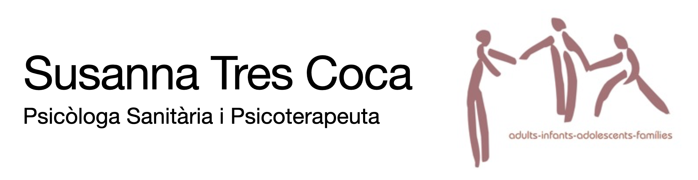

---
Susanna Tres Coca
LLIBRES
Col.laboració en elaborar les Enciclopèdies de Psicologia Infantil i d'Adolescevar nts de Editorial Oceano i Editorial Círculo de Lectores.
ARTICLES DE DIVULGACIÓ
Diari Ara, suplement Criatures
"Acompanyar als fills en el descobriment de la seva sexualitat" setembre 2016
"Protegir o sobreprotegir" febrer 2017
"Despendre's dels obejectes" gener 2018
"Noves tecnologies i desenvolupament saludable" febrer 2019
Revista Cuerpo Mente
Llevarse bien con los alimentos" Cuerpo Mente nº 295 Novembre 2016
Revista "Salut i Vida", diari La Vanguardia
"Cambios psicológicos en el ciclo menstrual" marzo 2002
"Autoestima" abril 2002
"Potencia tu empatia" mayo 2002
"Comunicación de los sentimiento en la pareja" junio 2002
"La seducción" julio 2002
"La creatividad" septiembre 2002
"Autoconocimiento a través de la pareja" octubre 2002
"Sobrevivir una pérdida" noviembre 2002
"Conflicto en las relaciones de pareja" enero 2003
"la relación con nuestros padres" febrero 2003
"El silencio interior" marzo 2003.
"El lenguaje no verbal" abril 2003
"Cultivar la empatía" mayo 2003
"Fidelidad en la pareja" abril 2003
"Problemas de convivencia" julio 2003
"La sensualidad" septiembre 2003
"Armonía entre el trabajo y la vida personal" octubre 2003.
"Intimidad sexual en la pareja" noviembre 2003
"las expectativas en la pareja" diciembre 2003
"El sentido del humor y la salud" enero 2004
"Manejar el enfado" febrero 2004
"La familia de la pareja" marzo 2004
"la pareja y la vida social" abril 2004
"El miedo al compromiso" mayo 2004
"La infertilidad" junio 2004
"Gestionar el ocio" julio 2004
"La pareja como espejo" septiembre 2004
"Falta de deseo sexual" octubre 2004
"Separaciones conflictivas" noviembre 2004
"Educar sin pareja" diciembre 2004
"Como escogemos la pareja" enero 2005
"Cuando llega el primer hijo" febrero 2005
"Adoptar un niño" marzo 2005
"La enfermedad en la familia" abril 2005
"Dudas en la pareja" mayo 2005
"Adicción a las relaciones" junio 2005
"Cuando los hijos llegan a la adolescencia" julio 2005.
"Egoísmo en las relacions" septiembre 2005
"Enfermedades psicosomáticas" octubre 2005
"Insatisfacción en el trabajo" noviembre 2005
"Miedo a enfermar" diciembre 2005.
"Dar lo mejor de nosotros" enero 2006.
"El cansancio crónico" febrero 2006
Revista Integral, ISSN 1135-6316
"La nueva pareja" num 276, 64-67, 2002
"Superar una crisis" num 279,66-69, 1998
"Confía en tu intuición" num 284, 62-65, 1998
"Vencer la hipocondría" num 290, 64-67, 2004La nueva pareja”, Integral, Nº 276, 64-67, 2002